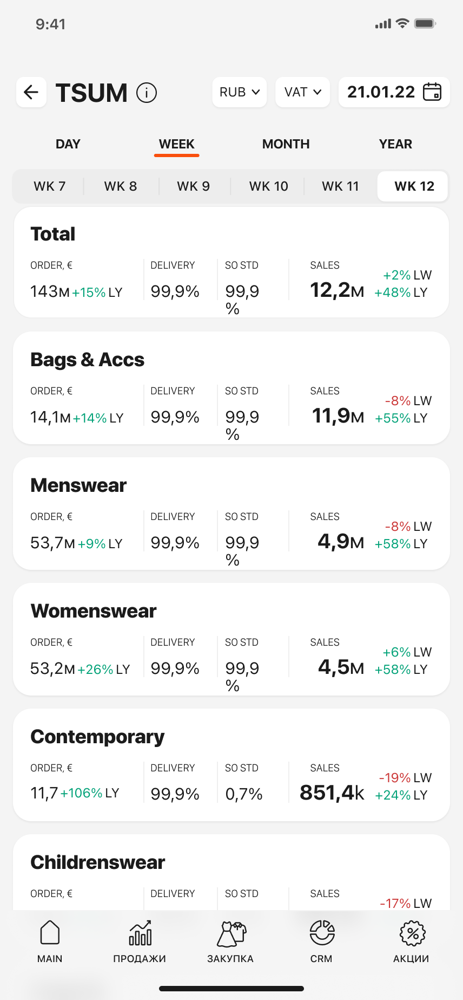

Обзор
Менеджерам бутиков ЦУМ нужно было отслеживать продажи, выручку и эффективность сотрудников на ходу. Существующие инструменты отчётности работали только на десктопе и требовали ручного экспорта — ежедневное принятие решений замедлялось.
Главная задача: показать большие объёмы аналитических данных на экране телефона, не перегружая пользователя, и сделать ключевые метрики мгновенно доступными.

Исследование и методология
Провёл структурированные интервью с 6 менеджерами бутиков, чтобы описать их ежедневные рабочие процессы с отчётностью и определить самые критичные данные.
Выявленные потребности:
- Динамика продаж и выручка по категориям — проверяют каждое утро
- Отчёт по арендаторам с показателями по брендам и сезонам
- Отчёты по наценке с анализом маржи по брендам и категориям
- CRM‑раздел: эффективность продавцов и поведение покупателей
Дизайн-задачи и решения
Задача 1 — Плотность данных на мобильном
Аналитические дашборды обычно строятся для широких десктопных экранов. Решил задачу группировкой связанных метрик в категориальные блоки, упрощёнными таблицами с выделенными ключевыми значениями и индикаторами роста/отклонений, которые мгновенно показывают направление тренда.

Задача 2 — Отчёты по арендаторам и наценке
Менеджерам нужно сравнивать показатели по брендам и периодам. Спроектировал табовый макет отчётов с фильтруемыми карточками брендов и наглядным сезонным сравнением в рамках одного скролла.


Задача 3 — CRM‑раздел
CRM‑вью должен показывать эффективность продавцов и поведение покупателей, не превращаясь в таблицу. Использовал ранжированные списки с инлайн‑прогрессом и цветовой кодировкой уровней для мгновенного сравнения.

Ключевые результаты
Дашборд получил положительные отзывы от всех групп стейкхолдеров на внутреннем тестировании и был утверждён к продакшен‑запуску.
Дизайн-артефакты
- Главный экран статистики с динамикой продаж и выручкой по категориям
- Отчёт по арендаторам с метриками по брендам и сезонным сравнением
- Отчёты по наценке с анализом маржи
- CRM‑раздел с эффективностью продавцов и поведением покупателей
- Гайдлайны по типографике и визуализации данных для мобильных